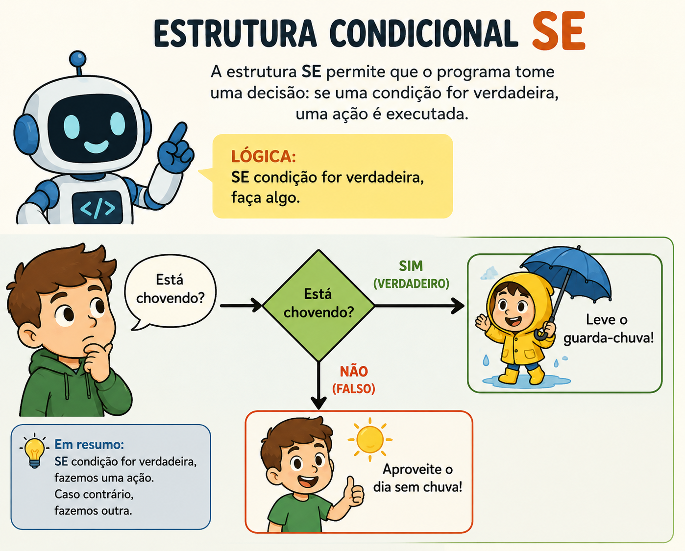

Uma página web é, na sua essência, um documento — parecido com uma folha de papel digital, escrita em HTML, que o navegador interpreta e exibe na tela. Ela pode ter texto, imagem, vídeo e links, mas sua função principal é mostrar informação.
Existem dois tipos principais de página:
Curiosidade: O símbolo "www" que aparece no início de muitos endereços não é obrigatório tecnicamente — é apenas uma convenção que ficou popular desde os anos 1990 para indicar que aquele endereço pertence à World Wide Web. Hoje a maioria dos sites modernos funciona perfeitamente sem esse prefixo.
Um serviço web (ou aplicação web) vai além de mostrar informação — ele permite que o usuário faça algo: enviar um e-mail, fazer uma transferência bancária, preencher um formulário, gerenciar uma planilha na nuvem.
A diferença central é que um serviço envolve interação de mão dupla: você envia dados, o sistema processa e devolve um resultado personalizado. Um banco digital, um sistema de matrícula escolar online e um aplicativo de delivery são todos exemplos de serviços web.
Dica: Uma forma simples de identificar se você está diante de uma página ou de um serviço: pergunte-se "eu só estou lendo, ou estou preenchendo algo que muda um resultado específico para mim?". Login, carrinho de compras e formulário são sinais claros de que você está usando um serviço.
Streaming é uma forma de entrega de conteúdo em que os dados chegam ao dispositivo em pequenos pedaços, continuamente, à medida que são consumidos — sem que o arquivo inteiro precise ser baixado antes de começar.
É por isso que é possível começar a assistir a um filme ou ouvir uma música quase instantaneamente, mesmo sendo um arquivo grande: o dispositivo recebe e reproduz os primeiros segundos enquanto o restante ainda está sendo transmitido, em segundo plano, "por trás das cortinas".
Curiosidade: Antes do streaming se popularizar, ouvir uma música ou assistir a um vídeo online exigia baixar o arquivo inteiro primeiro — um processo que podia levar minutos ou até horas, dependendo do tamanho do arquivo e da velocidade da conexão. O streaming eliminou essa espera ao entregar o conteúdo em pequenos blocos contínuos.
Aquele momento em que o vídeo para e aparece o símbolo de carregamento acontece quando o dispositivo consome os dados mais rápido do que a internet consegue entregá-los. O player precisa pausar para esperar o próximo bloco chegar — o famoso buffering.
Dica: Reduzir a qualidade do vídeo (de HD para uma resolução menor, por exemplo) é a forma mais eficaz de resolver travamentos causados por internet lenta, porque isso diminui a quantidade de dados que precisa chegar a cada segundo para manter a reprodução fluida.
| Formato | Função principal | Exemplo |
|---|---|---|
| Página web | Exibir informação | Blog, site institucional, notícia |
| Serviço web | Permitir uma ação do usuário | Internet banking, matrícula online, e-mail |
| Streaming | Entregar conteúdo contínuo em tempo real | Netflix, Spotify, transmissão ao vivo |
Curiosidade: Muitos aplicativos modernos combinam os três formatos ao mesmo tempo. O YouTube, por exemplo, é uma página (a interface que você vê), que funciona como serviço (permitir login, comentar, se inscrever em canais) e entrega o conteúdo principal por streaming (o vídeo em si). Reconhecer essas camadas ajuda a entender por que certos problemas técnicos acontecem em partes específicas do sistema, e não no aplicativo inteiro.